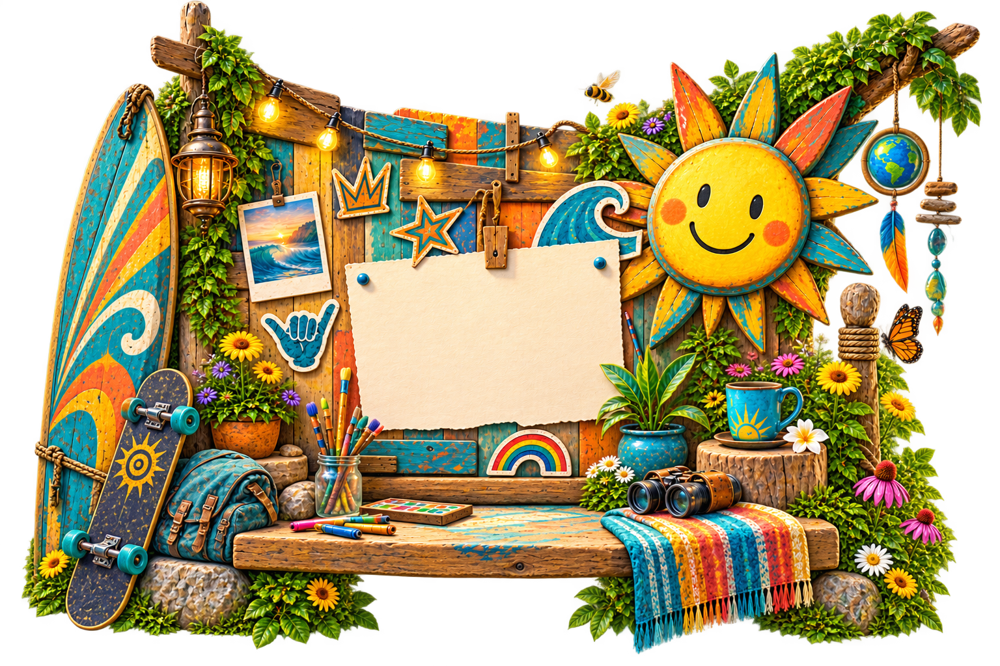
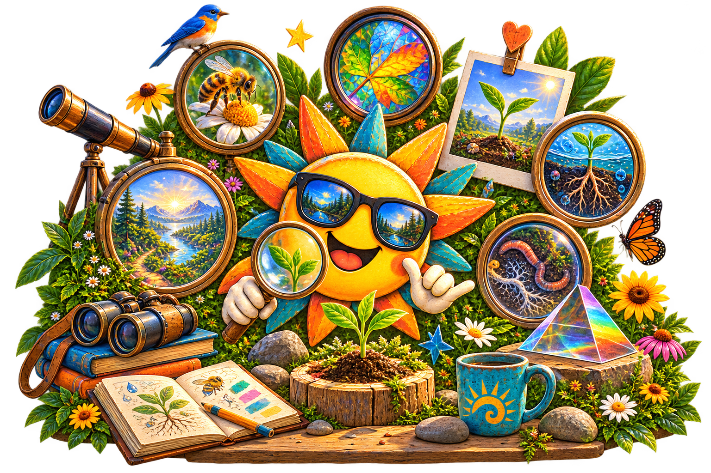

Your ideas and choices remain yours.
COME AS YOU ARE.
WELCOME,
CREATOR!
You belong here before you explain anything, prove anything, build anything, or know what comes next.
Creation OG helps you see more before you decide what comes next.
Bring an idea, decision, challenge, question or curiosity.
The OG Guides help reveal perspectives, relationships, evidence,
consequences and possibilities while you remain the creator.
You are free.Explore without surrendering your authority.Your voice matters.Your perspective may reveal what others cannot see.Your dignity matters here.You are a Human being, not a user to capture.You can rest.Nothing here requires constant progress.You can return.Changing your mind is welcome.

WHERE DO YOU WANT TO START?
Cross the threshold that meets you where you are.
Each portal opens a different set of conditions for attention, reflection and creation.
Wrong turns are welcome.Maps get better.You can leave anytime.Good systems have open doors.

A QUICK INTERACTIVE EXPERIENCE · ABOUT 5–7 MINUTES
The Architecture of Perception
What becomes visible when the lens changes?
Enter the Number Lab and experience familiar quantities through different forms.
Notice what feels natural, what creates friction, and what your own perception reveals.
No math expertise is needed.
There is no preferred response and no need to “perform.”
Move naturally, notice your experience, and see what becomes visible.
5–7 minutesNo special knowledgeNo right responseFollow what you notice
ENTER THE PERCEPTION EXPERIENCE →
GUIDANCE WITHOUT CONTROL
The OG Guides.
Different OG Guides look for different things. No Guide owns the answer or gets to decide for you. Together, they can help reveal what may deserve another look.
Clarity What are we actually trying to understand?Relationship Who and what does this touch?Evidence What do we know, assume or still need to learn?Experiment What is the smallest truthful way to learn?
The OG Guides shine the light. You decide.
A small first-look preview of the Guides architecture—not the full Creation OG experience.
OUR PROMISE TO THE HUMAN
Rich world. Clear view. Free Human.
Creation OG is built to serve the Human—not capture, profile, herd or control the Human.
Explore, question, disagree, choose another path or leave.
Your perspective may reveal something the rest of us could not see.
You are a Human being, not a user to capture or control.
Nothing here requires constant progress.
Changing your mind and beginning again are welcome.

ALL CREATION ENTERS RELATIONSHIP.Humans · animals · plants · pollinators · water · places · future generations